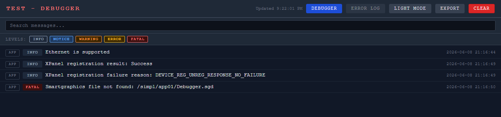

Self-contained CWS debug log page for Crestron SIMPL#Pro programs
| Author | Mark Jervis |
| Company | Stage Front Presentation Systems |
| Version | 1.2.0 |
| Date | 2026-06-09 |
| Assembly | CwsDebug.dll (Crestron.SimplSharp.SDK.ProgramLibrary 2.21.257, net8.0) |
| Namespace | CwsDebug |
| Public type | CwsDebugPage |
CwsDebug hosts a small, self-contained web page on the Crestron Web Server (CWS) that streams your program's own log messages and — on a hardware appliance — the processor error log. The page provides live search, severity filtering, light/dark themes, a pause control, a master logging switch, and one-click text export. The entire UI (markup, CSS, and JavaScript) is embedded in the library, so there are no external content files to deploy.
The log is held in a bounded in-memory ring buffer (size configurable at registration) and is mirrored to disk, so the most recent entries survive a program restart. Messages are stamped to millisecond resolution, and the page fetches only new entries on each poll. A process-wide singleton exposes the whole API statically, so any class on any thread can log without being handed an instance.
CwsDebugPage.LogInfo(…) and CwsDebugPage.Register(…) directly
— do not construct a new CwsDebugPage() (the constructor is private).It is built as a Program Library and referenced by a SIMPL#Pro program;
at build time the program bundles CwsDebug.dll into its own program archive
(.cpz). The library is not separately loadable onto a processor.
The debug page running live on an appliance. The header reads
TEST - Debugger (the host program is named TEST); each entry shows its
source, severity badge, message, and timestamp, with search and level filters above.

Add a reference to the library from your SIMPL#Pro program project:
<ItemGroup>
<ProjectReference Include="..\CwsDebug\CwsDebug\CwsDebug.csproj" />
</ItemGroup>(Or reference the compiled CwsDebug.dll directly.)
The API is static, so there is nothing to instantiate. Call Register() once from
InitializeSystem(); you can log from anywhere, on any thread, even before
Register() runs (early entries are kept and shown once the page is up).
using CwsDebug;
public class ControlSystem : CrestronControlSystem
{
public override void InitializeSystem()
{
CwsDebugPage.Register("/debugger"); // default base path; buffer defaults to 2000 entries
// CwsDebugPage.Register("/debugger", 5000); // optional: larger ring buffer
// CwsDebugPage.MinLevel = CwsDebugPage.DebugLevel.Notice; // optional: drop anything below Notice
CwsDebugPage.LogInfo("System starting");
CwsDebugPage.LogNotice("Loaded {0} devices", deviceCount);
CwsDebugPage.LogWarning("Low buffer on {0}", deviceName);
CwsDebugPage.LogError("Comms timeout on {0}", deviceName);
CwsDebugPage.LogFatal("Unrecoverable: {0}", reason); // also written to the system ErrorLog
}
public override void InitializeSystem_Example_Catch()
{
try { /* ... */ }
catch (Exception e)
{
CwsDebugPage.LogException(e, "Error during init"); // full type + message + stack trace
}
}
}Cleanup is automatic — the library releases the CWS server and flushes the log to disk when
the program stops or restarts — so calling Dispose()/Shutdown() by hand
is optional.
| Platform | URL |
|---|---|
| Appliance (RMC4, etc.) | http://<processor>/cws/debugger/debugger.html |
| VC-4 (Server) | http://<processor>/VirtualControl/Rooms/<roomId>/cws/debugger.html |
All members are static on CwsDebugPage.
| Member | Description |
|---|---|
LogInfo(msg, args) | Records an informational message. |
LogNotice(msg, args) | Records a notice-level message. |
LogWarning(msg, args) | Records a warning-level message. (new in 1.2.0) |
LogError(msg, args) | Records an error-level message. |
LogFatal(msg, args) | Records a fatal message and mirrors it to the system error log. |
LogException(ex, context?) | Records an exception at Error level with its full type, message and stack trace (and inner exceptions). (new in 1.2.0) |
Register(basePath, maxEntries?) | Starts the CWS server. basePath defaults to "/debugger"; maxEntries defaults to 2000 (values ≤ 0 are ignored). |
MinLevel PROP | Minimum severity recorded (DebugLevel = Info, Notice, Warning, Error, Fatal). Below-floor messages are dropped at the source. Defaults to Info. (new in 1.2.0) |
LoggingEnabled PROP | Master record switch. When false, all Log* calls are no-ops (fatals are still mirrored to the system ErrorLog). Persisted across restarts. Defaults to true. (new in 1.2.0) |
Dispose() / Shutdown() | Stops the server, flushes the log, releases resources. Idempotent and optional (cleanup is automatic). |
Each Log* method accepts an optional string.Format template plus
arguments, e.g. CwsDebugPage.LogInfo("Connected to {0}:{1}", host, port);
Register("/debugger", maxEntries) (default 2000). This bounds both memory and the
JSON payload sent to the page.MinLevel): drops sub-threshold messages before they
are ever stored — distinct from the page's level-filter buttons, which only hide
already-recorded entries in the browser.LoggingEnabled / "Logging" button): turns recording on
for a debugging session and off when finished. The state is persisted, so it survives a restart.
When off, the page status shows "LOGGING OFF".cwsdebug_<path>.log, plus .state for the switch) every few seconds when
changed and once on program stop, then reloaded on the next Register() — so recent
history survives a restart..../cws/debugger.html. Passing an
explicit (non-default) base path keeps it in the URL on every platform — required if a
single program hosts more than one debug page."{Name} - Debugger", where Name is the
room name on VC-4 and the host program's namespace/assembly name on an
appliance, falling back to the controller prompt name, then the base-path segment, then
"Debugger".err command and shown
only on a hardware appliance; the feature is hidden on VC-4, where no per-program console
error log exists.